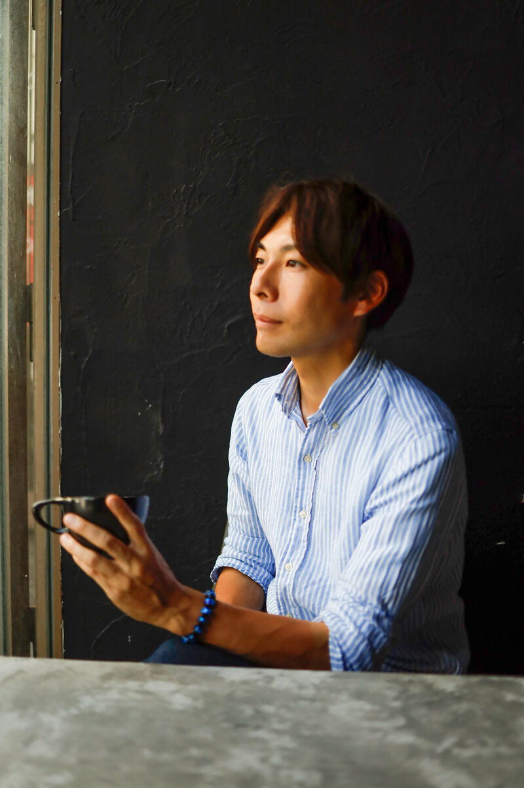

ABOUT
グルメの"色気"フォトグラファー

HAYATO KITAMURA
世界が認めた「表現」で、
あなたの本質を可視化する。
横浜を拠点に活動するフォトグラファー、HYOGENSHA（ひょうげんしゃ）代表の北村です。
私は幼い頃から、言葉にできない心の機微や、目に見えないエネルギーを「表現」することに情熱を注いできました。その探求の転換点は、アメリカ留学中にありました。世界中の多様な価値観に触れる中で、「もっと自由に、枠を超えて表現していいんだ」という真理に気づいたのです。
固定観念から解き放たれたとき、私の真の表現活動が始まりました。
「素晴らしい人やモノが、その魅力にふさわしい形で伝わっていない。」
活動を通じて多くの素晴らしい経営者やアーティストに出会う中で、私はある「もったいなさ」を感じるようになりました。
独自の輝きを放つ人ほど、その本質的な良さを世の中に届けるための「視覚的な翻訳」を必要としています。私が選んだその「翻訳」の手段が、写真です。
2025年には、スイーツの質感を官能的に捉えた作品群が評価され、「フランス国際芸術賞」を受賞。さらに2026年には、1823年創設の歴史ある「英国王立美術家協会（RBA）」の名誉会員に選出されました。
また、実務においても都内ミシュラン店40店舗の撮影を手掛けるなど、ハイエンドな表現領域において確かな実績を積み重ねてきました。
私にできることは、単なる「記録」としての撮影ではありません。
世界基準の審美眼と、被写体の奥底にある情熱を同期させ、
「あなたらしさ」の最大瞬間風速を一枚の芸術に昇華させることです。
世界は、私たちが思う以上に素晴らしい価値で溢れています。
その価値を、しかるべき場所へ、しかるべき熱量で届けること。それが私の使命です。
もしあなたの中に、まだ誰にも見せていない「真実の輝き」や、世に問いたい「情熱」があるのなら、ぜひ私にその表現をお手伝いさせてください。
共に、世界を揺さぶる一枚を創り上げましょう！